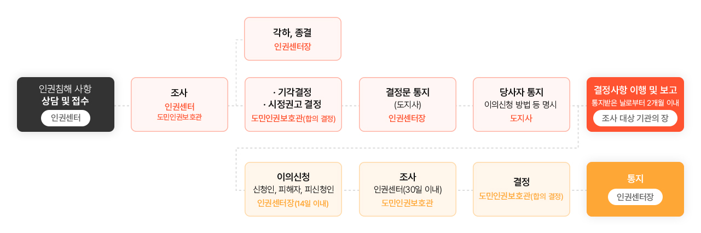

Chungcheongnam-do Human Rights Center
인권침해 상담·구제
-

- 인권침해 상담·구제
- 인권침해 상담·구제신청 진행절차
인권침해 상담·구제신청 진행절차
충청남도 인권센터는 인권침해와 차별행위를 독립적으로 조사하고 권고합니다.
인권침해 및 차별 사건은 충청남도 도민인권보호관 회의에서 합의 결정합니다. (상임인권보호관+비상임인권보호관)
신청대상
- 인권침해나 차별을 당한 본인 또는 제3자
조사대상
충청남도 관할 기관이나 시설의 업무수행과 관련하여 발생한 인권침해 사항에 대해 조사
-
01
도 및 그 소속 행정기관
-
02
도내 시․군
(도의 위임사무에 한함)
-
03
도가 출자 또는 출연하여 설립한 기관
-
04
도의 사무위탁기관
(도의 위탁사무에 한함)
-
05
도의 지원을 받는 각종 단체와 시설
신청방법
-
전화
041-635-3614, 3615 (상담시간 평일 오전 9시 ~ 오후 5시)
-
방문 및 우편
32255 충청남도 홍성군 홍북읍 충청남도 대로 21 충청남도청 본관 1층(125호) 충청남도 인권센터 (상담시간 평일 오전 9시 ~ 오후 5시)
-
전자우편
cnrights@korea.kr
-
인터넷
충청남도 누리집 – 인권센터 검색
-
수어 신청
신청인의 이름과 연락처, 피해자가 당한 인권침해 또는 차별행위 내용을 육하원칙(누가, 언제, 어디에서, 무엇을, 어떻게, 왜)으로 촬영한 후 전자우편(cnrights@korea.kr)으로 발송
처리절차
